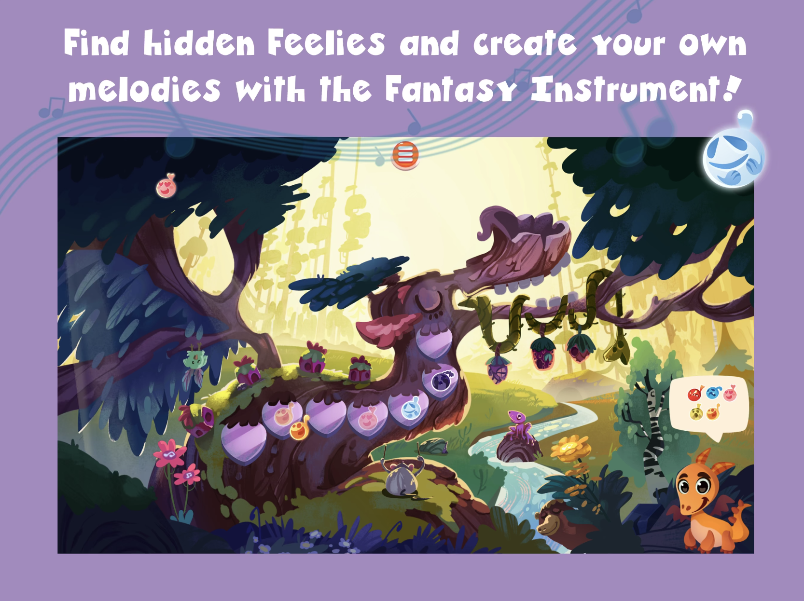
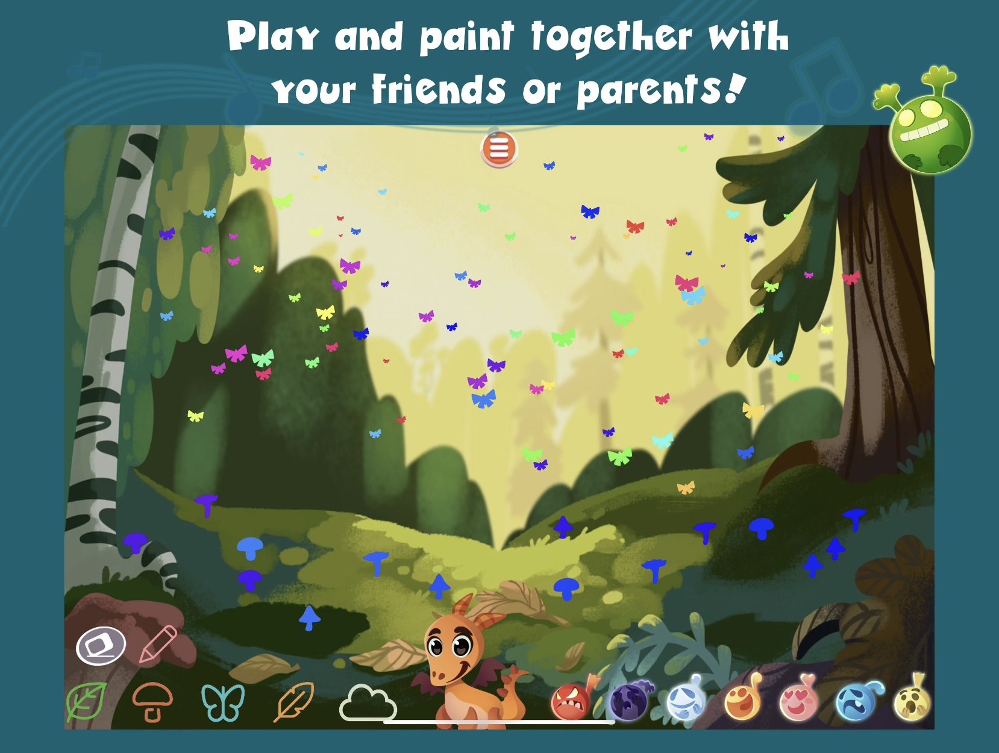

Music Fairy Tales Oy
Feel & Play is a musical app for mobile that helps children develop emotional intellgence skills.
An inspiringly participatory app adventure that combines musicality, visuality and playfulness with multi-user collaboration.
Feel and Play was funded by Finland's Ministry of Education, in an effort to promote their goals of improved emotional intelligence in children.
Programming role:
As the lead developer of this Unity project, I guided a small team of developers to improve the quality and functionality of the existing codebase as well as add new features, such as painting.
User research role:
I conducted usability testing and observation of target users (6-10 year olds) interacting with the application to evaluate the app design. Presenting these findings to the development team led to fruitful improvements, particularly in the mini-game sections of the app.
Technology / Team / Time:
Developed with Unity and C#. Versions developed for Android mobiles, iPads and large multitouch screens. Available on App Store.


